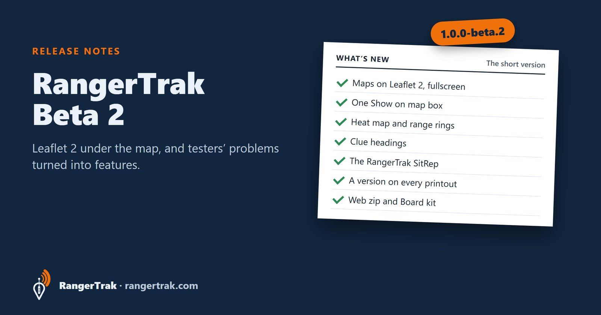
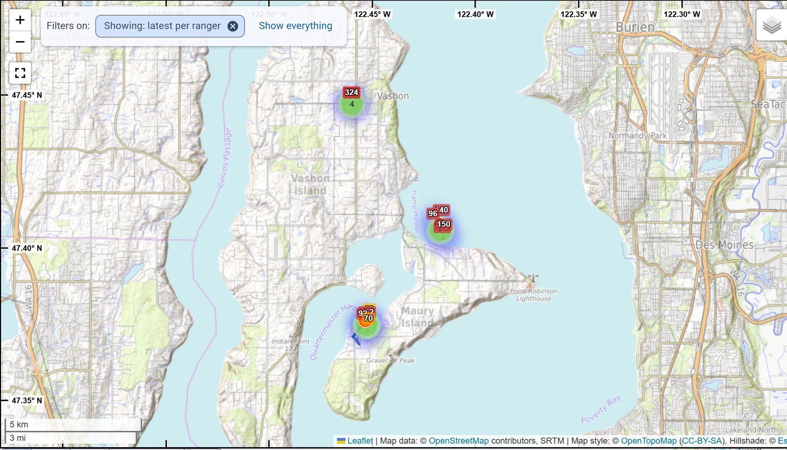
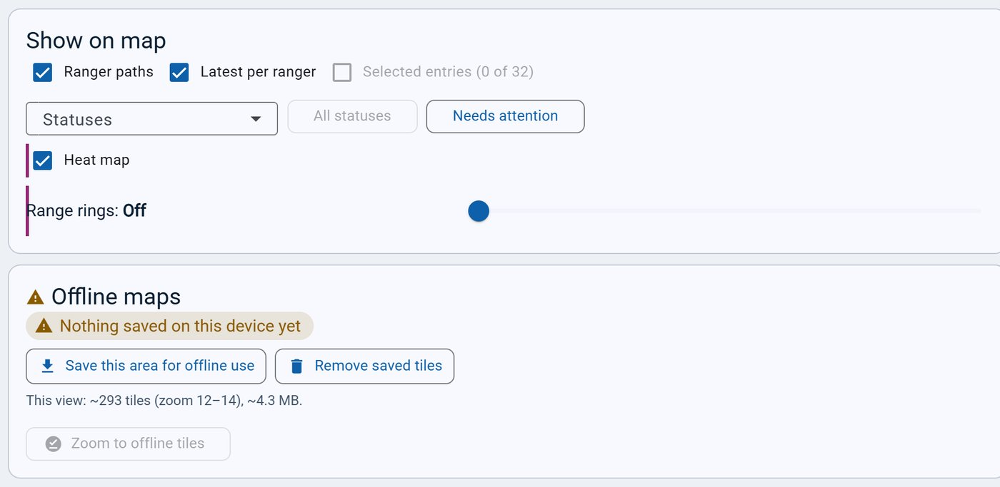
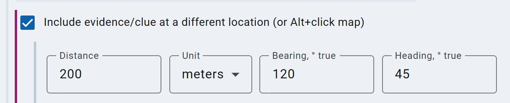
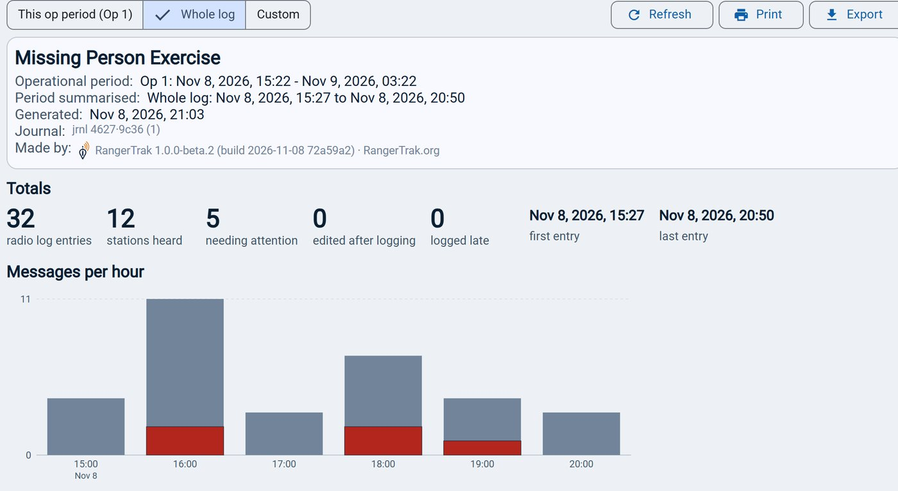

Release notes
RangerTrak Beta 2: What’s New

RangerTrak is a free, open-source radio log and map for the scribe at a CERT, ACS/ARES, SAR or wildland-fire command post. Log who, where, when and what off the radio; it maps them. It works offline once set up, and prints the Form 309 Communications Log, ICS-213 and ICS-214. I built it. It’s AGPL and will stay free. Try it at rangertrak.org, no account or install needed, and take the tour to learn it.
RangerTrak 1.0.0-beta.2 is out. The first beta went out on October 28 and said that from then on the changes would be fixes. Most of these are fixes, but not all. Testers kept running into the same few problems, mostly on the map, and some of the answers turned out to be new features. The biggest change is underneath: the maps now run on Leaflet 2.
It’s still a beta. It’s ready to try in a drill, not yet for a real call-out, and until it is, keep the paper log beside it.
The short version
- The map is new underneath: Leaflet 2, a fullscreen button, and a smaller first download.
- One Show on map box holds Ranger paths, a new heat map, range rings and the status filters.
- A clue heading: which way the tracks were going, drawn as an arrow on the map.
- The RangerTrak SitRep is the new name for the Mission summary.
- Every printout says which version made it.
- AAR notes speak HSEEP: an optional capability element on each note, and an improvement plan modelled on FEMA’s.
- Field phones show the clock, whether they’re online, and how many reports haven’t been sent.
- Your own copy: every release now carries a ready-built web zip and the Board kit, with a page on how to use them.
- Search Help and the tour, offline.
The map, underneath: Leaflet 2


RangerTrak’s map is drawn by Leaflet, the open-source map library behind a great many web maps. Leaflet 2 is its first major version since 2016, and RangerTrak now runs on it. You shouldn’t notice much, which is the point, but three things do show:
- A fullscreen button on the map. The filter chips stay in view, so a filtered map still says it’s filtered. On an iPhone the map fills the window instead.
- A smaller first download. The map code now loads only when you open a map, so the app starts with about 36 kB less to fetch (376 kB, down from 412).
- Screen readers announce a cluster of map markers by what it holds, for example “10 radio log entries, 2 clues.”
Leaflet 2 is itself still in beta, and RangerTrak moved early, with small patches to two add-ons so they fit. Every automated map test passes. If a map does something odd, it’s most likely this change, so please tell me.
Watching the mission


- Show on map. The controls under the map are regrouped. Zoom to extent and Print map sit right under it. Beside them, one Show on map box holds what belongs to your mission: Ranger paths, Latest per ranger, Selected entries, the heat map, range rings and statuses. The layers menu keeps the base maps and the reference overlays.
- Trails are now Ranger paths, so they aren’t confused with the hiking trails overlay.
- A heat map shows where reports cluster. At field zoom each report’s patch grows as you zoom in, so the markers don’t hide it.
- Range rings are one slider: Off, Auto, or a fixed distance.
- Pick any mix of statuses to show, for example Need rest/food together with Evidence report. A Needs attention button picks the urgent ones in one click. The Mission page’s “Flag on map” column is now called Needs attention too, so it matches.
- Offline maps has its own box: green when this area’s map is saved for offline use, amber when it isn’t. A save no longer stops at the first map tile that fails to download. It keeps going and tells you how it did.
- Add place moved next to Import places, in the places panel.
- Current op period entries are marked on the Radio Log, and one chip shows only those. The count, export, print and map follow.
Logging a report


- A clue heading, for search teams: which way the tracks, drag marks or subject were going, in degrees from true north (0 to 359). It’s optional. It draws as an arrow at the clue on the map, and shows on the Radio Log, the 309, the CSV export and the printed map’s legend.
- Entry keeps the report you were typing if you go to another page and come back. A tester had to check the map before she could finish a report and lost what she had typed. It’s kept in memory only, so reloading the page clears it.
- “Operator” is now “Prepared by (your name or call sign)”, the same words the printed map sheet uses, and it fills in the sheet’s Prepared by line.
Rangers and teams
- Delete selected rangers. Before, one row added by mistake could only go with Delete all. Now select the rows and delete just those; it names them and asks first. Their reports keep their call signs.
- Shared IDs and call signs are marked in red, with a note when you hover. They’re still allowed.
On paper
- Print map works in Simple view too, and Ctrl+P on the Map page prints the map sheet. Before, Ctrl+P printed the app’s header with no map.
- No more blank pages at the end of a printed map. The legend gets its own page only when it won’t fit on the map, and when it does fit, it sits where it covers the fewest markers.
- Every printout says which RangerTrak version made it, with the RangerTrak mark: the map sheet, Form 309, ICS-213, ICS-214, SitRep, roster and places sheets, and the After Action report. When a page from last month’s drill turns up, you can tell which build printed it.
The RangerTrak SitRep


The Mission summary is now the RangerTrak SitRep: messages per hour, traffic by team, and what needs attention, all from this radio log. It isn’t an ICS-209 and doesn’t try to be. You can reach it from the Mission page and the mission panel in the header, as well as from the Radio Log.
After the mission: AAR notes that speak HSEEP

If your group writes its after-action reports to FEMA’s HSEEP, each AAR note now has an optional Capability element: Planning, Organization, Equipment, Training or Exercise, the five HSEEP uses (POETE). The printed improvement plan is modelled on HSEEP’s AAR/IP, with HSEEP’s own column names in small type under ours: Observation is the issue or area for improvement, Recommendation the corrective action, Owner the responsible organization or point of contact. The capability element is in the spreadsheet export and the SitRep too.
It is a starting point for your AAR/IP, not the finished document. Leave the field blank if your group doesn’t use HSEEP; nothing else changes. More in What You Said You’d Fix.
More than one device
- The Board kit. The RangerTrak Board, the read-only command-post Wi-Fi server from the last post, now comes ready to run. Download the Board kit from the release, unzip it on a laptop with Node.js 24 or newer, and double-click Start RangerTrak Board. The Mission page’s Board card now says that this computer can run it, and links the kit.
- A field phone shows the clock, Online or Offline, and how many reports are on the phone and how many haven’t been sent. The mission timers and panels a phone doesn’t need are gone.
- Leave field mode is in the phone’s menu now, not buried in Help, and it warns you if any reports haven’t been sent.
- Merging checks report times. The command post warns, but still merges, when a packet has reports from before the mission started or more than 10 minutes in the future. A phone with the wrong clock is the usual cause.
Running your own copy
RangerTrak is AGPL, so you can always run your own copy. Now it’s easier: every release on GitHub carries a ready-built web zip that any web server can host, beside the Board kit. The new self-hosting page explains both. The zip leaves out the base map, so a group loads a map file for its own area. Most groups don’t need any of this, since rangertrak.org works offline once it’s set up, but some teams and agencies want the app on their own server.
Finding your way
- Search Help: one box finds an answer across every Help tab and each screen’s Guide, offline.
- The tour shows one module at a time, with a side menu, a search box and tick boxes for the steps you’ve done. The printed checklist shows them too. Search for a step’s number, such as T3.4, and that step comes first.
- Help’s tabs are in a better order: After mission now comes before Your data, and About sits near the end, just before Contact us.
- A mistyped address gets “Station not found. Say again?”, a guess at the page you meant, and a Help search using the words in the address.
When something goes wrong
Debug mode is gone. When the app hits an error now, it offers Report it, which opens Help → Contact us with a draft already written. You can add a diagnostic report if you choose: preview it first, since it may include text from warnings. It asks at most three times in a session, and Don’t show again turns it off until you close the tab. Nothing is sent unless you send it.
Also
Releases are now about weekly, but rangertrak.org updates whenever a fix is ready, so the footer and Help show both the version and the build, for example “Version 1.0.0-beta.2 (build 2026-11-07 …)”. Please quote it when you report something. Entry draws faster on first load. And there were many bug fixes; the changelog has every one.
All 1,464 unit tests pass on every deploy, beta.2 included.
Thank you
To the testers who wrote to me after the first beta: much of this list started as one of your sentences. The deleted-ranger button, the report Entry now keeps, and the regrouped map controls were all yours.
What’s next
Fixes, and the Board on real devices, before an upcoming exercise. 1.0 is still planned for November, after that exercise. From 1.0 on, backups made with it will restore in every later version.
Take the tour
New to RangerTrak, or coming back after the first beta? Take the RangerTrak Tour: nine hands-on modules, now one per page, with a box to tick for each step. Back up any real radio reports before starting!
Tell me
- Does the new Show on map box make sense the first time you see it?
- Did the map do anything odd? Quote the build from the footer.
Use the feedback form (start with “Beta 2”), Help → Contact us inside the app, reply on LinkedIn, or email RangerTrak [at] steadyeoc [dot] com.
Next in Field Notes: Field Phones, Up Close.
The next release: RangerTrak Beta 3: What’s New.